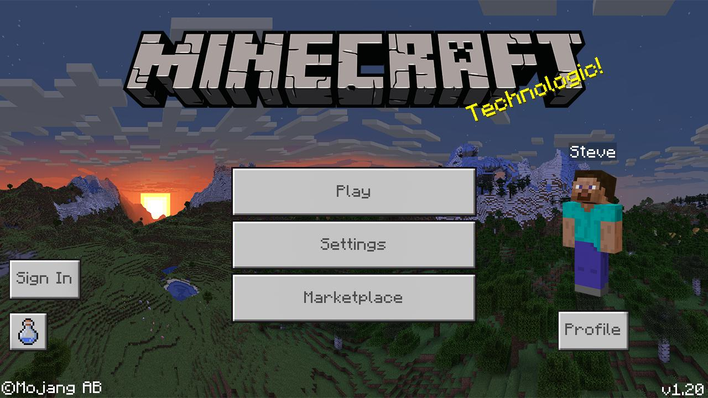
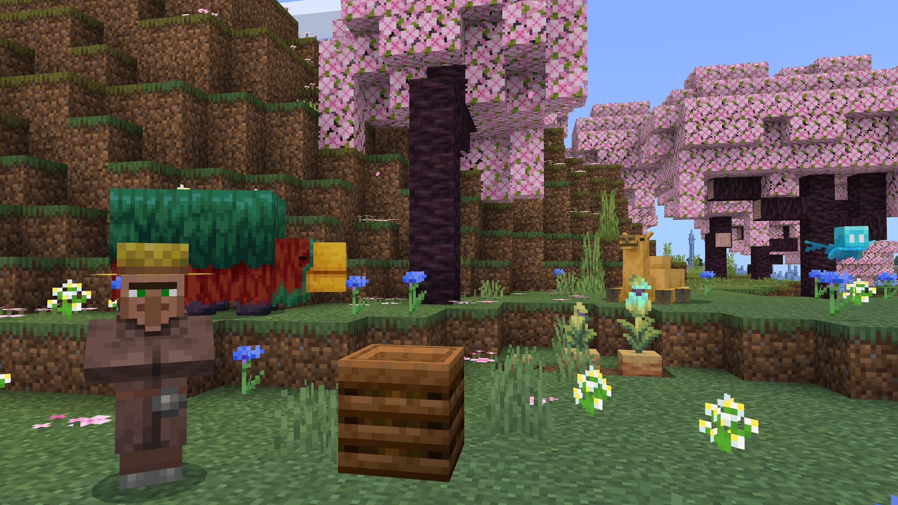
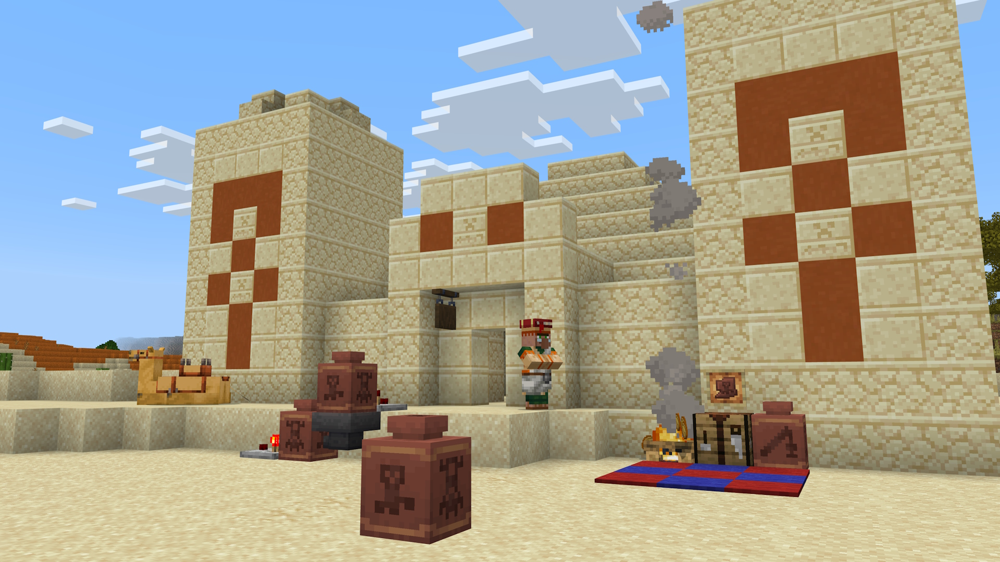

Minecraft Pockect Edition
Minecraft es un videojuego de construcción de tipo «mundo abierto» o en inglés sandbox creado originalmente por el sueco Markus Persson (conocido comúnmente como «Notch»), que creo posteriormente Mojang Studios (actualmente parte de Microsoft). Está programado en el lenguaje de programación Java para la versión Java Edition y posteriormente desarrollado en C++ para la versión de Bedrock Edition. 22 Fue lanzado el 17 de mayo de 2009, y después de numerosos cambios, su primera versión estable «1.0» fue publicada el 18 de noviembre de 2011.   